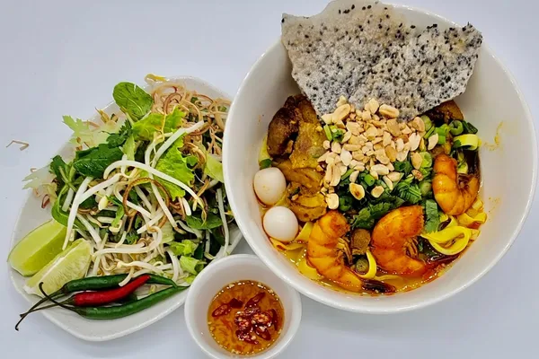

Banh Mi Recipe

Description
Mi Quang soup is a popular Vietnamese soup made from beef, shrimp, pork slices, peeled quails eggs and vegetables. Mi Quang is unique due to its mixed identity – it’s not quite noodle soup in the traditional sense, but not quite a dry vermicelli bowl either. Think of it as a “noodle soup” with about 1/4 of the broth, or a “salad” with noodles and a little broth at the bottom of the bowl.
Ingredients
- Chicken
- Shallots and Vietnamese pearl onions
- Turmeric powder
- Fish Sauce
- Salt
- Peppers
- Red annatto oil
- Rice noodles
- rice crackers
Steps
- Cook the Broth. First, parboil the chicken bones and then simmer the bones with ginger and charred shallots for over an hour. Near the end, we will season it with fish sauce and juice from cooking the chicken meat.
- Cook the Meat. Cooking meat separately since they require different cooking time, but first, let marinate them with some turmeric powder and fish sauce. Either finely mince or pound the Vietnamese pearl onions (or shallots), then sauté half of it until fragrant. Add the chicken breast strips and cook until no longer pink. Then add a bit of water and cook for another 10 minutes to firm up the meat and let it absorb the seasonings. Sauté the remaining pounded pearl onions and add the chopped thighs and drumsticks. Cook until no longer pink, and then add water and simmer for about half an hour. Its almost like braising the meat.
- Making mi quang bowl. Add some cooked noodles to the bowl. Add the toppings, herbs and vegetables of your choice. Sprinkle scallions and roasted peanuts. Add the broth and make sure that the broth stays below the noodles. Having said that, if you prefer a more soupy mi Quang, feel free to go for it. Serve the dish with some rice crackers, and add some lime juice or several slices of red chili if desired. Mi Quang shops often serve a small bowl of fish sauce with garlic and chili on the side as well.